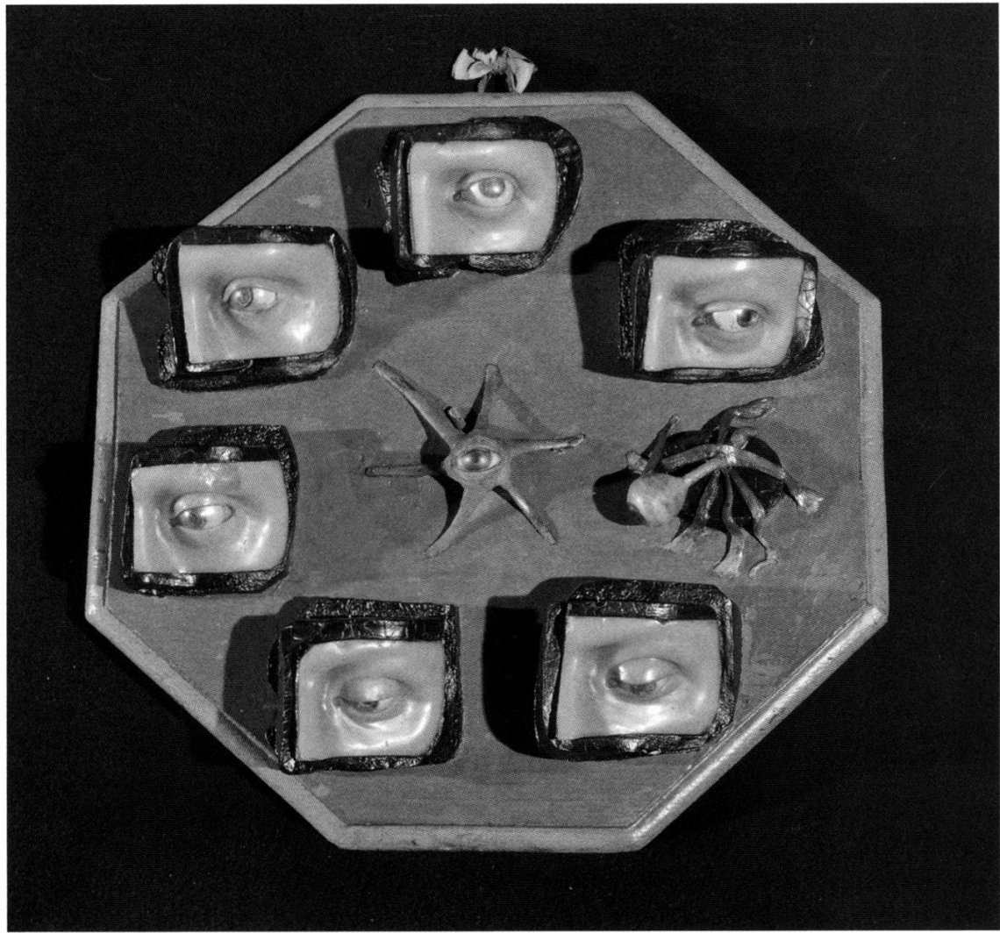

A Journey Through History, Culture & Innovation
The institue of science in the Palazzo Poggi, Bologna, houses a remarkable collection of wax anatomies created in the eighteenth century by artist-scientists renown for their work during their lifetimes but seldom considered by art historians today. Ercole Lelli, Giovanni Manzolini, and Anna Morandi Manzolini (1714-74), the subject of Rebecca Messbarger’s critical study and biography, were contemporaries, rivals, and partners in the art of making reproductions in wax of the human body and body parts for both the amazement of the public as well as medical instruction. This illuminating and thought-provoking account of Morandi’s life and work raises important questions for scholars of visual culture and encourages this reader to think more deeply about how artists learned about the human body, what eighteenth-century viewers saw when they looked at fine art, and the complex ways artist-partners worked.
Luigi Crespi, an eighteenth-century biographer of Bolognese artists, established the narrative of Morandi’s career, and his account has been repeated by following writers, that is, until Messbarger. According to Crespi, Morandi was gifted but entirely dependent on her husband’s personal tutoring and professional success in his production of anatomical wax models. Morandi’s husband, Giovanni Manzolini, was fourteen years her senior and an established artist in Bologna when they married in 1740. It is 
No surprise that this account of a female artist subservient to her husband and workshop master would be questioned today. Indeed, Morandi was twenty-six at the time of her marriage. While little is known about her life before her marriage, Morandi’s personal collection of Latin texts on anatomy and medicine; her own detailed writings based on her dissections of human cadavers, and her business skills on which she had to rely following the early death of her husband in 1755, which left her a single mother with two children to support; to say nothing of her artistic abilities, all suggest an education that was both humanist and practical. The more we learn about artists’ wives, the more we realize that male artists frequently sought marriages that were not only financially and socially rewarding, but were also partnerships in business if not in actual production. That Morandi so smoothly came to work at her husband’s side—literally at his side at the dissection table—further illuminates the practice of art production within families in the early modern period.
The lack of information about Morandi’s early life allows Messbarger to build a context for the artist’s life and work in Bologna, a city that historically took great pride in its women scholars and artists. The picture that Messbarger creates for her readers of eighteenth-century Bologna is one of a city with a university depleted of its former excellence. She suggests that it was General Luigi Ferdinando Marsili, of a prominent Bolognese family, who breathed new life into Bologna’s scholarly communities in the early eighteenth century with his foundation of the Institute of Sciences, which united both the Academy of Sciences and the Clementina Academy of Art. The Institute not only brought together the sciences and the arts, it placed a renewed emphasis on “‘experiment, classification, and exposition’” (5). A generation later Morandi exemplified the new focus on the practical and experimental that Marsili had established as the core of the Institute’s philosophy. The Clementina, on the other hand, was a conservative society that continued the great Bolognese traditions of the late-sixteenth and early-seventeenth centuries established by the Carracci family. Ercole Lelli, the leading Bolognese anatomist at the time of Morandi’s rise to prominence, adhered to this conservative approach and saw his work as addressing the needs of artists looking for models. It is against that backdrop of an idealized art that Morandi can be seen infusing a methodical observation and scientific inquiry into her recreations in wax of the structure and systems of the human body.
Perhaps more important to Morandi than Marsili was the Bolognese nobleman Prospero Lambertini, the future Pope Benedict XIV. Before his rise to the papacy in 1740, Lambertini returned to Bologna in 1730 as cardinal archbishop from his position as custodian of the Vatican Library. He supported Marsili’s plans for the Institute of Sciences and wanted to see Bologna once again a center of learning admired throughout Europe. For Lambertini it was medical science, particularly the study of anatomy, that set Bologna apart from other cities. He established the first chair of surgery at the Institute and authored several decrees advancing anatomical studies. Of particular relevance here was his reinterpretation of Pope Boniface VIII's Bull of 1299 that essentially prohibited the use of Christian bodies for dissection. Lambertini’s 1737 decree, “On the Anatomy to Be Done in Public Schools,” included a directive to Bolognese clergy to encourage their parishioners to donate bodies of deceased family members for the purpose of anatomical research. This offered the possibility of having cadavers of types of individuals seldom before examined by anatomists, who previously could only study the remains of condemned criminals. For Morandi and her husband a generation later, this decree assured a steady flow of material for their wax models.
Critical to Lambertini’s plan for Bologna’s revival as the center for medical arts in Europe was the anatomy museum in the Institute, where life-size wax anatomical figures were to be displayed to the public. Ercole Lelli was commissioned by Lambertini to create these, including the life-size écorchés, or flayed human bodies made from wax, wood, and actual human bones, that showed the muscles and skeleton beneath the skin. The fully fleshed figures are presented as idealized bodies of Adam and Eve, with Adam gazing heavenward while Eve’s face is downcast in submission. The final male and female figures, full skeletons, were made from selected bones of numerous cadavers; they hold scythes that reinforce a narrative reading of Lelli’s work as a comment on the transitoriness of life. The museum’s purposes were several: to present the work of the Institute to the Bolognese public, to attract the attention of Italians and Europeans to Bologna’s medical accomplishments, and, for Lelli, to offer Bolognese artists an opportunity to study the human body in a manner that was far superior to standard studio practices. Lelli was assisted in his work by Manzolini, who resigned in 1746, claiming he had not received due credit for his skills and accomplishments. Shortly thereafter Manzolini together with his wife, Anna Morandi, opened a rival wax modeling studio and school of anatomy in their home, where medical students came for instruction.
Within their home studio and laboratory, Morandi and Manzolini dissected over a thousand cadavers, with Morandi presenting lectures during dissections to students and distinguished visitors. That Morandi, a woman, was so actively involved in dissection surprised many, as did her knowledge of the parts and systems of the human body. After her husband’s death, Morandi continued her scientific work, and her reputation spread with requests for commissions from throughout Europe as well as the Russian court of Catherine the Great.
Morandi’s work was distinguished in significant ways from that of Lelli. Rather than seeing artists as a major audience, Morandi placed herself within the medical community of Bologna. In contrast to Lelli’s quasi-narrative figures, Morandi’s wax anatomies are stripped of narrative, allowing the viewer to be amazed at the work that is the human body itself. The grand poses and symbol-laden figures of Lelli seem both trite and overstated when the viewer comes face to face with what appears to be a mirror reflecting a part of ourselves we thought we knew but now realize we had never really seen. For example, Morandi’s studies of the eye appear on an octagonal blue ground that was hung before the viewer (Fig. 1). On this blue field—as if numbers on the face of a watch—are eight human eyes. Six of these are framed by a partial nose, brow, and upper cheek made of wax, then further framed by waxed cloth, making each eye appear to be peering out through a large keyhole. The viewer’s sensation that these eyes are staring is heightened by the fact that each is looking in a different direction. The other two eyes have no supporting flesh or bone; rather, we see what Morandi saw during dissection—the working eye supported by muscles, here taut against the blue surface of this mirror-like ground. These eyes, one gazing directly at the viewer, appear even more animated than the other six, in spite of their isolation from the human face. This is artistically an extraordinary composition, but after the initial shock of wonder subsides, the viewer realizes how accurate these eyes are, and how critical they must have been for medical instruction.
Messbarger convincingly argues for Morandi’s place within Enlightenment science, and not, as Crespi and most later biographers suggested, merely as the dutiful wife of one of Bologna’s premier wax anatomists. Messbarger supports this claim through her analysis of Morandi’s extensive notes and letters, a careful examination of the wax models, and the writings of many contemporaries. Morandi was one of several women in eighteenth-century Bologna who engaged in scientific disputes. The areas of her expertise the developmental anatomy of the skeleton, the reproductive systems of men and women, as well as the sensory organs—were much debated at the time, and Morandi made corrections to erroneous ideas established in the medical community through her hands-on knowledge and observation from dissections.
More than a biography, this rich narrative outlines the religious, political, cultural, and scientific life of eighteenth-century Italy, specifically Bologna. Rebecca Messbarger, associate professor in romance languages at Washington University in St. Louis, explores these contexts to suggest how a female artist-scientist could succeed in spite of the prejudices and sanctioned restrictions against a woman professional. Anna Morandi and her remarkable work—so beautifully illustrated in The Lady Anatomist—demands the attention of art historians and scientists of various research interests. There is much for us to learn here, not the least of which is the importance of these scholarly communities to one another, both historically and today.
Source: The Lady Anatomist: The Life and Work of Anna Morandi Manzolini by Rebecca Messbarger
Our user-friendly interface allows you to seamlessly navigate between articles and visualize their locations on an interactive map, while our commitment to editorial excellence ensures that every piece is engaging, informative, and accurate. The Discovering Bologna team has meticulously crafted every typographic detail, from font families and sizes to colors, margins, aspect ratios, and captivating images with captivating captions, to truly reflect the graphic theme and ambiance of this captivating city.
Join us on this digital adventure and explore the wonders of Bologna like never before, all from the comfort of your own home. Discovering Bologna: Unraveling the secrets of the city, one story at a time.